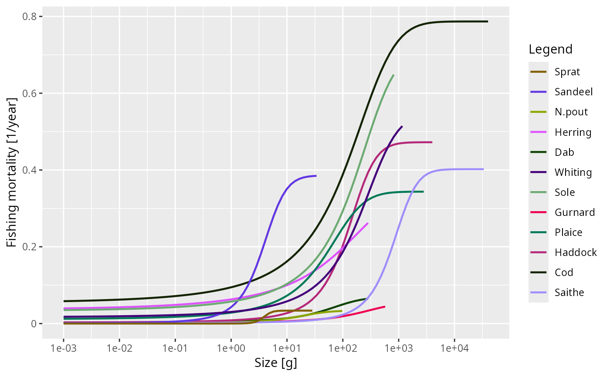

S3 class for time x species x size arrays
Source:R/ArrayTimeBySpeciesBySize-class.R
ArrayTimeBySpeciesBySize.RdSome functions in mizer return three-dimensional arrays (time x species x
size) holding quantities like fishing mortality, feeding level, or predation
mortality through time. The ArrayTimeBySpeciesBySize class wraps these
arrays to provide convenient print(), summary(), plot(),
animate(), and as.data.frame() methods.
Arguments
- x
A 3D array (time x species x size).
- value_name
A string giving the human-readable name for the value.
- units
A string giving the units (e.g. "1/year").
- params
A
MizerParamsobject. Used for species colours, linetypes, and size ranges in theplot()andanimateSpectra()methods.
Details
An ArrayTimeBySpeciesBySize object behaves just like a regular array for
arithmetic operations and subsetting. It carries these lightweight attributes:
value_name– a human-readable name for the value (e.g. "Fishing mortality").units– the units of the value (e.g. "1/year").params– theMizerParamsobject that the value was computed from.
Examples
# \donttest{
fmort <- getFMort(NS_sim)
is.ArrayTimeBySpeciesBySize(fmort)
#> [1] TRUE
summary(fmort)
#> Fishing mortality [1/year]
#> 44 times x 12 species x 100 sizes
#>
#> Species Min Mean Max
#> Sprat 0.0000000000 0.33743869 2.1827924
#> Sandeel 0.0000000000 0.26816487 1.3102141
#> N.pout 0.0000000000 0.30707882 2.1827924
#> Herring 0.0077894362 0.32918211 1.9100547
#> Dab 0.0017746971 0.04908083 0.1734253
#> Whiting 0.0126246154 0.33123701 1.3975648
#> Sole 0.0268320133 0.30068824 1.1274436
#> Gurnard 0.0000000000 0.01269037 0.1307616
#> Plaice 0.0089964121 0.24671481 0.8671267
#> Haddock 0.0015854377 0.31410333 1.4275908
#> Cod 0.0494762790 0.37063678 1.0721081
#> Saithe 0.0009633361 0.15709914 1.2032865
plot(fmort, time = 2007)

# }